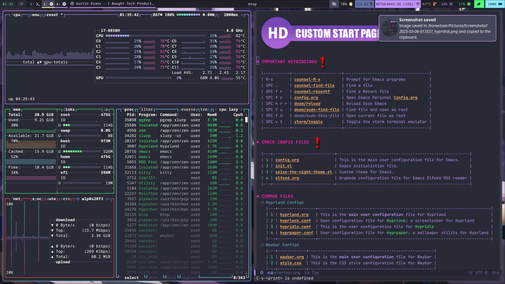
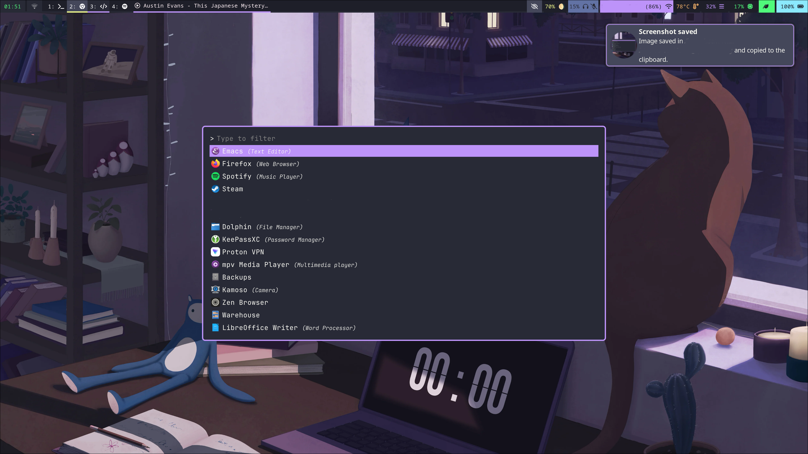

HD's Hyprland Config
Table of Contents

BACKGROUD
What is Hyprland?
Hyprland is an independent tiling Wayland compositor written in C++. Noteworthy features of Hyprland include dynamic tiling, tabbed windows, a clean and readable C++ code-base, and a custom renderer that provides window animations, rounded corners, and Dual-Kawase Blur on transparent windows. General usage and configuration is thoroughly documented at Hyprland wiki. – https://wiki.archlinux.org/title/Hyprland
How do I use Hyprland?
Screenshots
 
Reloading this config
To ensure that changes made in this file are saved to the hyprland config we need to do three things:
- save this file with
:w - tangle the contents of the source code blocks in this file to the hyprland config. To do this we must run the command
org-babel-tanglewith the key comboC-c C-v t. this will copy the contents of all specified source code blocks into the hyprland.conf file. - Finally we must tell hyprland to reload its config file by running the
hyprctl reloadcommand.
ESSENTIAL PROGRAM CONFIGURATIONS
This section includes links to the configuration files used by non Hyprland packages to create a functionally complete Hyprland Window Manager/Desktop Environment.
HYPRLAND CONFIGURATION
Variables
Essential environment variables
$mainMod = SUPER $terminal = kitty $menu = rofi -show drun run combi
Less essential environment variables
$fileManager = dolphin $browser = xdg-open about:profiles
Environment Variables
Some default env vars.
env = XCURSOR_SIZE,24 env = QT_QPA_PLATFORMTHEME,qt6ct
Autostarts
Autostarts are programs which are executed when Hyprland starts. Bellow are the autostart configurations for my system.
Necessary for proper system functionality
- KDE Policy Kit
exec-once = systemctl --user start plasma-polkit-agent - Waybar and NMapplet
exec-once = waybar exec-once = nm-applet --indicator
- Hypridle
exec-once = hypridle - Hyprpaper
exec-once = hyprpaper - SwayNC
exec-once = swaync -c ~/.config/swaync/config.json -s ~/.config/swaync/style.css - Cliphist
Start Clipist
Stores only text data
exec-once = wl-paste --type text --watch cliphist storeStores only image data
exec-once = wl-paste --type image --watch cliphist store - Playerctl
start playrctl daemon
exec-once = playerctld - Low Battery Script
Start a script to notify the user when the battery is low.
exec-once = ~/.config/hypr/scripts/low_battery.sh - Bluelight Script
Run my bluelight script which sets a
hyprsunsetvalue.exec-once = ~/dotfiles/hypr/scripts/blue-lightNormaly this script would run once an hour via
cron; however, at times I will login to my sistem inbetween one of these hourly checks. Therefor it is necessary to run thebluelightscript once upon login to properly set thehyprsunsetvalue at Hyprland startup. - Greyscale Script
Run my greyscale script which enables/disables a shader for Hyprland.
exec-once = ~/.local/bin/greyscaleNormaly this script would run once an hour via
cron; however, at times I will login to my sistem inbetween one of these hourly checks. Therefor it is necessary to run thegreyscalescript once upon login to properly set the shader values at Hyprland startup.
Permisions
If you have hyprland-qtutils installed, you can make use of Hyprland’s built-in permission system.
For now, it only has one permission, but it might include more in the future. Permissions
Permissions work a bit like Android ones. If an app tries to do something sensitive with the compositor (Hyprland), Hyprland will pop up a notification asking you if you want to let it do that.
Enable Permisions
ecosystem:enforce_permissions = true
Screencopy Permisions
permission = /usr/bin/grim, screencopy, allow permission = /usr/bin/hyprshot, screencopy, allow permission = /usr/bin/hyprpicker, screencopy, allow permission = /usr/(lib|libexec|lib64)/xdg-desktop-portal-hyprland, screencopy, ask
Plugin Permisions
Deny hyprctl from loading 3rd party plugins. If a plugin needs to be loaded change this to ask, or allow.
permission = /usr/bin/hyprctl, plugin, deny
Input Configuration
input { kb_layout = us kb_variant = kb_model =
Remap Capslock to Escape and turn Numlock on by default
kb_options = caps:ctrl_modifier kb_rules = numlock_by_default = true follow_mouse = 1
Touchpad configuration
touchpad { natural_scroll = no } sensitivity = 0 # -1.0 to 1.0, 0 means no modification. }
Fixes nvidia issues
cursor { no_hardware_cursors = true }
Per-device Input Configuration
See https://wiki.hyprland.org/Configuring/Keywords/#per-device-input-configs for more
device { name = elan-trackpoint sensitivity = 1 }
Keybindings
Critical
These are keybindings which are critical for proper system functionality
bind = $mainMod, Q, exec, $terminal bind = $mainMod, C, killactive, bind = $mainMod, E, exec, emacsclient -c -a "" bind = $mainMod, M, exec, $fileManager bind = $mainMod, V, togglefloating, bind = $mainMod, D, exec, $menu bind = $mainMod $shiftMod, C, exec, launch-waybar && launch-nwg-wrapper
Move Focus
Move focus with $mainMod + arrow keys
bind = $mainMod, left, movefocus, l bind = $mainMod, right, movefocus, r bind = $mainMod, up, movefocus, u bind = $mainMod, down, movefocus, d
Move focus with $mainMod + HJKL keys
bind = $mainMod, H, movefocus, l bind = $mainMod, J, movefocus, r bind = $mainMod, K, movefocus, u bind = $mainMod, L, movefocus, d
Workspaces
- Switch to Workspace (x)
Switch workspaces with
$mainMod+[0-9]bind = $mainMod, 1, workspace, 1 bind = $mainMod, 2, workspace, 2 bind = $mainMod, 3, workspace, 3 bind = $mainMod, 4, workspace, 4 bind = $mainMod, 5, workspace, 5 bind = $mainMod, 6, workspace, 6 bind = $mainMod, 7, workspace, 7 bind = $mainMod, 8, workspace, 8 bind = $mainMod, 9, workspace, 9 bind = $mainMod, 0, workspace, 10
Switch to the "special" or "scratchpad" workspace
bind = $mainMod, S, togglespecialworkspace, magic - Move Windows to Workspace (x)
Move active window to a workspace with
$mainMod+SHIFT+[0-9]bind = $mainMod SHIFT, 1, movetoworkspace, 1 bind = $mainMod SHIFT, 2, movetoworkspace, 2 bind = $mainMod SHIFT, 3, movetoworkspace, 3 bind = $mainMod SHIFT, 4, movetoworkspace, 4 bind = $mainMod SHIFT, 5, movetoworkspace, 5 bind = $mainMod SHIFT, 6, movetoworkspace, 6 bind = $mainMod SHIFT, 7, movetoworkspace, 7 bind = $mainMod SHIFT, 8, movetoworkspace, 8 bind = $mainMod SHIFT, 9, movetoworkspace, 9 bind = $mainMod SHIFT, 0, movetoworkspace, 10
Move active window to "special" workspace
bind = $mainMod SHIFT, S, movetoworkspace, special:magic - Scroll Through Workspaces
Scroll through existing workspaces with
$mainMod+ scrollbind = $mainMod, mouse_down, workspace, e+1 bind = $mainMod, mouse_up, workspace, e-1
Resizing Windows
Toggle window fullscreen
bind = $mainMod, F, fullscreen
Move/resize windows with $mainMod + LMB/RMB and dragging
bindm = $mainMod, mouse:272, movewindow bindm = $mainMod, mouse:273, resizewindow
SUPER + CTRL Keybindings
The below bindings all begin with the $mainMod (super) and CTRL keys. I intend to move these keybinds to a submap at some point. Unfortunately, currently the submap configuration does not seem to actually execute the given commands. It also repeatedly broke other essential binds ex: SUPER+Q, SUPER+D
For this reason I will be leaving these as regular bindings until I have the time to figure out what was breaking the submap.
Hyprshot
similar to the SUPER + CTRL keybindings the below keybindings all use the PRINT key. Currently this is not the first key in all of the binds; however when i get around to implimenting submaps i will make the PRINT key the primary key.
bind =, PRINT, exec, hyprshot --freeze -m output -t 7500 bind = $mainMod, PRINT, exec, hyprshot --freeze -m window -t 7500 bind = $shiftMod, PRINT, exec, hyprshot --freeze -m region -t 7500
Volume Control
Use Media keys to control volume settings
bind =, XF86AudioLowerVolume, exec, wpctl set-volume @DEFAULT_AUDIO_SINK@ 5%- bind =, XF86AudioRaiseVolume, exec, wpctl set-volume @DEFAULT_AUDIO_SINK@ 5%+ bind =, XF86AudioMute, exec, wpctl set-mute @DEFAULT_AUDIO_SINK@ toggle
Set microphone key to toggle microphone mute
bind =, XF86AudioMicMute, exec, wpctl set-mute @DEFAULT_AUDIO_SOURCE@ toggle
Brightness Control
binde = ,XF86MonBrightnessDown, exec, brightnessctl set 10%- binde = ,XF86MonBrightnessUp, exec, brightnessctl set 10%+
Default Web Browser Switching
similar to the SUPER + CTRL keybindings the below keybindings all use the CTRL + ALT key combination. When i get around to implimenting submaps i will make the CTRL + ALT combo the submap trigger.
bind = CTRL ALT, B, exec, xdg-settings set default-web-browser brave-browser.desktop bind = CTRL ALT, F, exec, xdg-settings set default-web-browser org.mozilla.firefox.desktop bind = CTRL ALT, M, exec, xdg-settings set default-web-browser mullvad-browser.desktop
Execute the default web browser
bind = $mainMod, B, exec, $browser
Screen Capture
Bind to capture an output
bind =, PRINT, exec, hyprshot -m output
Bind to capture a window
bind = $mainMod, PRINT, exec, hyprshot -m window
Bind to capture a selected area
bind = $shiftMod, PRINT, exec, hyprshot -m region
Monitor Configuration
Set the the defoault monitor preference
See https://wiki.hyprland.org/Configuring/Monitors/
monitor=,preferred,auto,auto
Specify configuration for built in Laptop Display
monitor=eDP-1, 3840x2160@60.0020, 0x0, 2
Specify configuration for HP DislayPort Monitor
monitor=DP-5, 1920x1200@59.9500, auto-up, 1
Specify configuration for HML HDMI Monitor
monitor=HDMI-A-4, 3840x2160@30.00000, auto-right, 1.5, transform, 1 monitor=HDMI-A-1, 3840x2160@30.00000, auto-right, 1.5, transform, 1
Decoration
General
Enable rounding of window corners
decoration { # See https://wiki.hyprland.org/Configuring/Variables/ for more rounding = 6
- Shaders
Enable a screen shader based on the provided shadder file. In this case the provided file is a shader file which enables a greyscale effect.
#######screen_shader = ~/.config/hypr/scripts/greyscale-shader.glsl
bellow is an example of this shader in action:

- Blur
Configure blur and drop shadow. These settings are currently disabled; though i am leaving them in (just commented out) so i can quickly re-enable in future if I desire.
#blur { # enabled = true # size = 3 # passes = 1 #} # drop_shadow = yes # shadow_range = 4 # shadow_render_power = 3 # col.shadow = rgba(1a1a1aee)
}
- Group Decorations
Decorations for when windows are grouped together.
group { #col.border_active = rgba(bd93f9ff) rgba(ff79c6ff) rgba(ffb86caa) rgba(8be9fdaa) 45deg col.border_active = rgba(bd93f9ff) rgba(8be9fdaa) 45deg groupbar { enabled = true gradients = true font_size = 16 font_family = JetBrains Mono height = 24 text_color = rgba(f8f8f2ff) #white col.active = rgb(bd93f9) rgb(44475a) 90deg col.inactive = rgba(282a36dd) } }
- Backup decoration settings
this is a copy of the default decoration settings; copied here for reference. they are not copied to the running configuration.
decoration { # col.shadow = rgba(1E202966) # suggested shadow setting #drop_shadow = yes #shadow_range = 60 #shadow_offset = 1 2 #shadow_render_power = 3 #shadow_scale = 0.97 }
- Dracula Theme
general { col.active_border = rgb(44475a) rgb(bd93f9) 90deg col.inactive_border = rgba(44475aaa) col.nogroup_border = rgba(282a36dd) col.nogroup_border_active = rgb(bd93f9) rgb(44475a) 90deg no_border_on_floating = false border_size = 2
non-gradient alternative
col.active_border = rgb(bd93f9) col.inactive_border = rgba(44475aaa) col.group_border = rgba(282a36dd) col.group_border_active = rgb(bd93f9)
darker alternative
col.active_border = rgb(44475a) # or rgb(6272a4) col.inactive_border = rgb(282a36) col.group_border = rgb(bd93f9) col.group_border_active = rgb(44475a) # or rgb(6272a4)
}
- Performance Enhancements
Disable some things to improve performance/improve battery life.
decoration:shadow:enabled = false decoration:blur:enabled = false misc:vfr = true
Animations
Some default animations, see https://wiki.hyprland.org/Configuring/Animations/ for more
animations { enabled = yes bezier = myBezier, 0.05, 0.9, 0.1, 1.05 animation = windows, 1, 7, myBezier animation = windowsOut, 1, 7, default, popin 80% animation = border, 1, 10, default animation = borderangle, 1, 8, default animation = fade, 1, 7, default animation = workspaces, 1, 6, default }
Disable Default Wallpaper
See https://wiki.hyprland.org/Configuring/Variables/ for more
Set to 0 or 1 to disable the anime mascot wallpapers
misc { force_default_wallpaper = 0 }
Layout
General
Set the gap and border variables for hypland
See https://wiki.hyprland.org/Configuring/Variables/ for more
general { gaps_in = 5 gaps_out = 10 border_size = 2 col.active_border = rgba(8be9fdaa) rgba(bd93f9ff) 90deg col.inactive_border = rgba(595959aa) layout = dwindle
Please see https://wiki.hyprland.org/Configuring/Tearing/ before you turn this on
allow_tearing = false
}
- Define the Dwindle layout
See https://wiki.hyprland.org/Configuring/Dwindle-Layout/ for more
Master switch for pseudotiling. Enabling is bound to
$mainMod + Pin the keybinds section belowdwindle { pseudotile = yes
You probably want this
preserve_split = yes } - Master Layout
See https://wiki.hyprland.org/Configuring/Master-Layout/ for more
general:layout = master master { new_status = true }
- Gestures
Enable "workspace swipe"; to use the touchpad to move between Hyprland workspaces.
gestures { workspace_swipe = on }
Window Rules
- Examples
Example windowrule v1
windowrule = float, ^(kitty)$Example windowrule v2
windowrulev2 = float,class:^(kitty)$,title:^(kitty)$=See https://wiki.hyprland.org/Configuring/Window-Rules/ for more
- V2 Window Rules
Check if a window is xwayland
windowrulev2 = bordercolor rgb(ff5555),xwayland:1You'll probably like this.
windowrulev2 = suppressevent maximize, class:.*